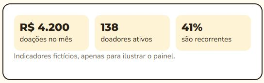
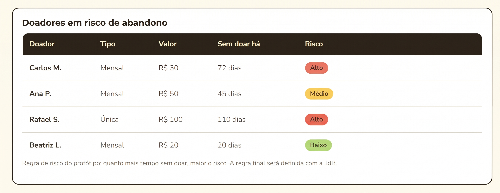

Portal da equipe
Onde a Turma do Bem filtra as informações e atividades dos doadores
O problema
A Turma do Bem tem pouco tempo e muitos doadores. Sem um meio de filtrar esses dados, a equipe leva mais tempo para saber quem parou de doar
Como funciona
- IndicadoresVisão geral de doações e doadores ativos.
- Lista de riscoDoadores ordenados pelo score de risco de abandono.
Protótipo · dados fictícios

